第三部分 · 时变处理的因果推断 · Part III — Causal inference for time-varying treatments
第 19 章 · 时变处理
Hernán MA, Robins JM（2020）. Causal Inference: What If. Chapter 19. 本页为中文全文翻译，附译注。
到目前为止，本书讨论的都是不随时间变化的固定处理。然而，许多因果问题涉及随时间变化的处理。举例来说，我们可能感兴趣于估计药物治疗、生活习惯、就业状况、婚姻状况、职业暴露等的因果效应。由于这些处理对同一个人来说在不同时刻可能取不同的值，我们把它们称为时变处理（time-varying treatments）。在第一部分和第二部分把注意力限制在时固定处理上，帮助我们引入了基本概念和方法。现在是时候考虑更贴近现实的因果问题了：它们比较的是一段时间里逐步展开的假想干预。第三部分就是把前两部分的材料扩展到时变处理。本章介绍时变处理因果推断中的一些关键术语和概念。我们已经尽力把这些概念化简（要是不信，去翻翻因果推断的文献就知道了），但这仍然是全书最技术性的一章之一。遗憾的是，再简化就会损失太多严谨性。不过既然你已经读到了这里，你就有资格读懂这一章。
19.1 时变处理的因果效应
考虑一个时固定的处理变量 A（1：接受治疗，0：不接受治疗），在随访的零点确定；结局变量 Y 在 60 个月后测量。我们此前把 A 对结局 Y 的平均因果效应定义为治疗 a = 1 下的反事实均值 E[Ya=1] 与不治疗 a = 0 下的反事实均值 E[Ya=0] 之差，即 E[Ya=1] − E[Ya=0]。由于处理状态是对每个人都在同一个时刻（零点）确定的，这个平均因果效应不需要指明处理发生的时间。相比之下，涉及时变处理的因果对比必须把时间显式地写进去。
为简单起见，我们暂且假定这段时期内没有个体失访或死亡，并且所有变量都被完美测量。
要看出这一点，考虑一个时变二值处理 Ak，它在随访的每个月 k 都可能改变，其中 k = 0, 1, 2 … K，K = 59。例如，在一项针对人类免疫缺陷病毒（HIV）感染者的 5 年随访研究中，若个体在第 k 个月接受抗逆转录病毒治疗（antiretroviral therapy），Ak 取值 1，否则取 0。研究在时间 0 开始之前，没有任何个体接受过治疗，即对所有个体都有 A−1 = 0。
请记住，我们用小写字母表示随机变量的某个具体实现：ak 是处理 Ak 的一个实现。
为了与许多已发表的论文保持一致，我们采用从 0 开始的时间下标。也就是说，第一个可能有治疗的时刻是 k = 0，而不是 k = 1。
我们用上划线表示治疗史，即 Āk = (A0, A1, …Ak) 是从时间 0 到时间 k 的治疗史。当我们指到 K 为止的整个治疗史时，常把 ĀK 写成不带下标的 Ā。在 HIV 研究中，整个随访期都持续接受治疗的个体，其治疗史是 Ā = (A0 = 1, A1 = 1, …A59 = 1) = (1, 1, …1)，也就是 Ā = 1̄。同理，整个随访期都从未接受治疗的个体，其治疗史是 Ā = (0, 0, …0) = 0̄。多数个体只在随访期的一部分时间里接受治疗，因此具有居中的治疗史，其中既有一些 1 也有一些 0——这种治疗史没法像 1̄ 和 0̄ 那样紧凑地表示。
为简化问题，我们的例子考虑在固定时间测量的结局。不过本章讨论的概念同样适用于时变结局和失效时间结局（failure time outcomes，见技术要点 21.8）。
假设 Y 衡量随访结束时（时间 K + 1 = 60）的健康状况，Y 值越高表示健康越好。我们希望估计时变处理 Ā 对结局 Y 的平均因果效应。但我们再也不能把时变处理的平均因果效应定义为某个单一时刻 k 上的对比，因为 E[Yak=1] − E[Yak=0] 刻画的是处理 Ak 在单一时刻 k 的效应，而不是时变处理 Ak 在 0 到 59 各个时刻上的效应。
因此我们不得不把平均因果效应定义为两种处理策略下的反事实均值之差，这两种策略都涉及从随访开始（k = 0）到随访结束（k = K）所有时刻上的处理。其结果是，时变处理的平均因果效应并没有唯一的定义。下一节将描述时变处理平均因果效应的多种可能定义。
19.2 治疗策略
处理策略（treatment strategy，也叫 plan、policy、protocol 或 regime）是一条规则，用来在随访的每个时刻 k 分配处理。例如，两种处理策略是"始终治疗"和"从不治疗"。"始终治疗"策略写作 ā = (1, 1, …1) = 1̄，"从不治疗"策略写作 ā = (0, 0, …0) = 0̄。现在我们就可以把 Ā 对结局 Y 的平均因果效应定义为"始终治疗"策略下的反事实均值 E[Yā=1̄] 与"从不治疗"策略下的反事实均值 E[Yā=0̄] 之差，即 E[Yā=1̄] − E[Yā=0̄]。
比较处理策略的一般反事实理论最早由 Robins（1986, 1987, 1997a）提出。
但时变处理 Ā 的可能因果效应还有很多，每一个都由两个特定处理策略下的结局对比来定义。例如，我们可能对 E[Yā] − E[Yā′] 定义的平均因果效应感兴趣，它比较的是策略"隔月治疗" ā = (1, 0, 1, 0…) 与策略"除第一个月外每个月都治疗" ā′ = (0, 1, 1, 1…)。可能的对比数量非常大：由于二值的 ak 有 2K 种取值组合 (a0, a1, …aK)，我们至少可以定义 2K 个处理策略。事实上，正如接下来要解释的，这 2K 个策略还并未穷尽所有可能的处理策略。
要在 HIV 例子中定义更多策略，考虑时变协变量 Lk，表示所有个体在第 k 个月测量的 CD4 细胞计数（单位：个/µL）。当 CD4 细胞计数偏低（提示预后不良）时，Lk 取值 1，否则取 0。在时间零点，所有个体的 CD4 细胞计数都高，即 L0 = 0。于是我们可以考虑这样一条策略："Lk = 0 期间不治疗，Lk = 1 时开始治疗，此后再持续治疗"。这条处理策略与上一段讨论的那些不同，因为我们无法用规则 ā = (a0, a1, …aK) 来表示它——那种规则让所有个体在 k = 0 时都接受 a0，在 k = 1 时都接受 a1，依此类推。现在，在每个时刻，一部分个体接受治疗，另一部分不接受，取决于他们不断变化的 Lk 的取值。这就是动态处理策略（dynamic treatment strategy）的一个例子：一条规则，其中时刻 k 的处理 ak 依赖于个体的时变协变量 L̄k 的演化。处理不依赖于协变量的策略 ā 则称为非动态或静态处理策略（static treatment strategy）。它们的形式定义见精细辨析 19.1。
涉及时变处理的因果推断，比较的是两个或更多处理策略下的反事实结局。只有在指定了我们感兴趣的处理策略之后，时变处理的平均因果效应才是良好定义的。在 HIV 例子中，我们可以基于 E[Yā] − E[Yā′] 来定义一个平均因果效应，让策略 ā（比如"始终治疗"）对比策略 ā′（比如"从不治疗"）；也可以基于 E[Yā] − E[Yg] 来定义一个，让策略 ā（"始终治疗"）对比策略 g（比如"只在 CD4 细胞计数偏低后才治疗"）。注意我们经常用 g 代表任何策略——静态的或动态的。当用它代表静态策略时，我们有时写成 Yg=ā 而不是只写 Yg 或 Yā。
也就是说，时变处理并不存在单一的因果效应定义。即便每个时刻 k 只有"治疗"与"不治疗"两个选项，我们仍然能定义与处理策略对数一样多的因果效应。下一节将描述一种研究设计，在这种设计下所有这些因果效应都能被有效地估计：序贯随机试验。
19.3 序贯随机试验
图 19.1、19.2 和 19.3 的因果图概括了时变处理研究中可能出现的三种情形。在这三张图中，Ak 表示时变处理，Lk 表示测量到的变量，Y 表示结局，Uk 表示 k 时刻未测量到的变量，它们是因果图上至少另外两个变量的共同原因。由于协变量 Uk 没有被测量，它们的取值是未知的，因此无法用于分析。在我们的 HIV 研究中，时变的 CD4 细胞计数 Lk 是真实的、但未被测量的慢性免疫系统损伤 Uk 的结果。个体的免疫损伤 Uk 越重，其 CD4 细胞计数 Lk 和健康状况 Y 就越差。为简化，这些因果图只画出了随访的前两个时刻 k = 0 和 k = 1，并且我们假定所有参与者都遵守了所分配的处理。
图 19.1 缺少从测量协变量 L̄k 或未测量协变量 Ūk 指向处理 Ak 的箭头。图 19.2 有从测量协变量 L̄k 指向处理 Ak 的箭头，但没有从未测量协变量 Ūk 指向它的箭头。图 19.3 则两者都有。
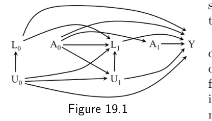
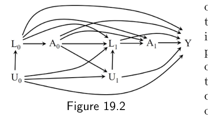
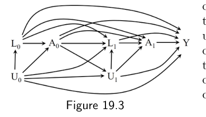
图 19.1 可以代表这样一项随机化试验：每个时刻 k 的处理 Ak 被随机分配，其概率只依赖于既往治疗史（为简化，我们假定全程完全依从）。例如，若某个体上个月未接受治疗（Ak−1 = 0）就以概率 0.5、上个月接受了治疗（Ak−1 = 1）就以概率 1，为其分配第 k 个月的处理，那么我们的 HIV 研究就由图 19.1 表示。当我们关注静态处理策略之间的对比时，图 19.1 正是"时变处理下不存在由测量变量或未测量变量造成的混杂"这一无混杂情形的恰当推广。在这种因果图下，如果每个人都遵循静态策略 ā，反事实均值 E[Yā] 就只是那些遵循了策略 ā 者的结局均值 E[Y | Ā = ā]。（有意思的是，对动态策略来说并非如此。在一个依赖于变量 L 的动态策略 g 下，反事实均值 E[Yg] 只有在所有处理 Ak = 1 依赖于 Lk 的时刻 k 上，接受治疗 Ak = 1 的概率恰好等于 0.5 时，才等于遵循了策略 g 者的结局均值。否则，要识别 E[Yg] 就需要在 L、A 和 Y 的数据上运用 g 方法，且依据的是图 19.1 或图 19.2。）
图 19.2 可以代表这样一项随机化试验：每个时刻 k 的处理 Ak 由研究者随机分配，其概率依赖于既往治疗史和已测协变量史。例如，若某个体在每个月 k 的处理取值这样随机分配：上个月未治疗且 CD4 细胞计数高者（Ak−1 = 0, Lk = 1）以概率 0.4，上个月未治疗但 CD4 细胞计数低者（Ak−1 = 0, Lk = 0）以概率 0.8，此前已接受治疗者（Ak−1 = 1）以概率 0.5，无论其 CD4 细胞计数如何，那么我们的这项研究就由图 19.2 表示。在图 19.2 中，时变处理存在由测量变量造成的混杂，但没有由未测量变量造成的混杂。
在观察性研究中，治疗决策往往依赖于结局的预测因子，比如预后因素。因此，观察性研究通常由图 19.2 或图 19.3 而不是图 19.1 来表示。例如，假设我们的 HIV 随访研究是一项观察性研究（而非实验），其中 CD4 细胞计数 Lk 越低，患者接受治疗的可能性就越大。那么，若在每个月 k，真实世界中的治疗决策都基于既往治疗史和 CD4 细胞计数史（Āk−1, L̄k）的取值，而不基于任何未测量变量 Ūk 的取值，我们的研究就由图 19.2 表示。于是，图 19.2 所表示的观察性研究与序贯随机试验的差别，只在于分配概率是未知的（但可以从数据中估计）。遗憾的是，我们无法从经验上判断一项观察性研究究竟由图 19.2 还是图 19.3 的因果图表示。由图 19.3 表示的观察性研究存在未测量混杂，后面会讲到。
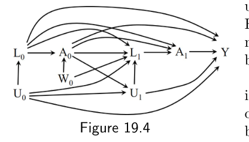
把处理在每个时刻 k 都随机分配给每个个体的实验，称为序贯随机试验（sequentially randomized experiment）。因此图 19.1 和图 19.2 都可以代表序贯随机试验。另一方面，图 19.3 不能代表随机化试验：每个时刻 k 的处理 Ak 的取值部分依赖于未测量变量 U，而 U 是 Lk 和 Y 的原因，但未测量变量显然不能被研究者用来分配处理。也就是说，一个序贯随机试验可以用这样的因果图来表示：图中有许多时间点 k = 0, 1…K，并且在任何时刻 k 都没有从未测量预后因素 U 指向处理 Ak 的直接箭头。
序贯随机试验在实践中并不常用。然而，序贯随机试验这个概念有助于理解有效估计时变处理因果效应的一些关键条件。下一节将正式给出这些条件。
19.4 顺序可交换性
如第一、二部分所述，关于时固定处理的有效因果推断通常要求条件可交换性 Ya ⊥⊥ A | L。当可交换性 Ya ⊥⊥ A | L 成立时，只要通过标准化、逆概率加权、g 估计或其他方法适当地调整 L 中的变量，就能得到处理 A 对结局 Y 因果效应的无偏估计。我们预期条件可交换性在条件随机化试验中成立——即个体被分配处理的概率依赖于协变量 L 取值的试验。在观察性研究中，如果接受处理的概率依赖于已测协变量 L，且在给定 L 后不再依赖于任何未测量的、处理与结局的共同原因，那么条件可交换性就成立。
同样地，时变处理的因果推断要求调整时变协变量 L̄k，以便在每个时间点都达到条件可交换性，也就是顺序条件可交换性（sequential conditional exchangeability）。例如，在一个只有两个时间点的研究中，顺序条件可交换性就是第一个时刻和第二个时刻的条件可交换性合在一起，即 Yg ⊥⊥ A0 | L0 且 Yg ⊥⊥ A1 | A0 = g(L0), L0, L1。（为简洁，本书省略"条件"二字，直接说顺序可交换性。）我们把这一组条件独立关系称为：在任何——静态的或动态的——策略 g 下，只要它同时干预时变处理的两个分量 (A0, A1)，Yg 就满足顺序可交换性。
对于那些治疗史 [A0 = g(L0), A1 = g(A0, L0, L1)] 等于（即符合于）他们跟随策略 g 走到随访结束时本会接受的治疗的个体，反事实结局 Yg 根据一致性就等于观测到的结局 Y，因而也等于静态策略 (a0 = A0, a1 = A1) 下的反事实结局。
一个序贯随机试验——即每个时刻 k 的处理 Ak 被随机分配，其概率只依赖于个体的既往协变量史 L̄k 和治疗史 Āk−1 的试验——意味着对 Yg 的顺序可交换性。也就是说，对任何策略 g，在每个时刻 k，给定既往协变量史 L̄k 和任一与策略 g 相容的已观测治疗史 Āk−1 = g(Āk−2, L̄k−1)，在时刻 k 接受治疗者与不接受治疗者对 Yg 是可交换的。形式上，对 Yg 的顺序可交换性定义为
Yg ⊥⊥ Ak | Āk−1 = g(Āk−2, L̄k−1), L̄k 对所有策略 g 和 k = 0, 1…K
这种形式的顺序可交换性（后面我们还会看到其他形式）在任何因果图中都成立，只要该图像图 19.2 那样，没有从未测量变量 U 指向处理变量 A 的箭头。因此，在序贯随机试验中，以及在这样的观察性研究中——每个时刻接受处理的概率依赖于其治疗史和已测协变量史 Āk−1, L̄k，且在给定这一历史后不再依赖于任何未测量的结局原因——对 Yg 的顺序可交换性成立。也就是说，在图 19.2 所表示的观察性研究中，所有策略 g 下的反事实均值 E[Yg] 都是可识别的；而在图 19.3 所表示的观察性研究中，没有任何反事实均值 E[Yg] 是可识别的。在由其他因果图表示的观察性研究中，某些策略（但并非全部策略）g 下的反事实均值 E[Yg] 是可识别的。
举例来说，考虑由因果图 19.4 表示的观察性研究，其中包含一个未测量变量 W0。在我们的 HIV 例子中，W0 可以是时间 0 时一次已安排好的门诊的指示变量，而这次门诊没有被记录进我们的数据库。在这种情况下，W0 是处理 A0 与被测量（带有一定误差）的 CD4 细胞计数 L1 的共同原因，而 U1 表示 CD4 细胞计数背后那个未知但真实的取值。尽管 W0 未被测量，反事实均值在任何静态策略 g = ā 下仍然是可识别的；然而在任何处理分配依赖于 L1 的动态策略 g 下，反事实均值 E[Yg] 就不可识别。为了说明为什么在某些策略下可识别、在另一些策略下不可识别，下一节我们将会使用 SWIG。
每当我们谈论因果效应的可识别性时，可识别公式都是 g 算法（g-formula，见第 21 章）。在与本章讨论无关的少数情形中，效应可以由与 g 算法相关但并不相等的公式识别（例如技术要点 7.3）。
除了某种形式的顺序可交换性，涉及时变处理的因果推断还要求可阳性性（positivity）和一致性（consistency）的顺序版本。在序贯随机试验中，我们预期顺序可阳性性与一致性都成立（见技术要点 19.2）。下文我们将假定顺序可阳性性与一致性成立。在这三个可识别性条件之下，只要我们使用适当调整了治疗史与协变量史 Āk−1, L̄k 的方法，例如 g 算法（标准化）、IP 加权和 g 估计，就能识别我们感兴趣的策略 g 下的反事实均值 E[Yg]。
19.5 某些（但非全部）治疗策略下的可识别性
在第 7 章中，我们介绍过一条图示规则——后门准则（backdoor criterion）——用来评估在某个特定因果图下，对时固定处理的可交换性是否成立。后门准则可以推广到时变处理。例如，对于静态策略，处理策略的因果效应可识别的一个充分条件是：在每个时刻 k，所有不经过任何未来处理的后门路径都被阻断。
不过，推广后的后门准则并没有直接显示出阻断后门路径与顺序可交换性之间的联系，因为这套程序基于不含反事实结局的有向无环图。评估因果效应可识别性的另一种图示检验基于 SWIG（第 7 章也已讨论）。SWIG 对时变处理尤其有帮助。
考虑图 19.5 和图 19.6 的因果图，它们是图 19.2 和图 19.4 的简化版本。我们去掉了节点 U0 和 L0，以及从 A0 指向 U1 的箭头。此外，从 L1 指向 Y 的箭头也不存在，因此 L1 不再是 Y 的直接原因。图 19.5 和图 19.6（就像图 19.2 和图 19.4 一样）的差别在于：处理 Ak 与其后的协变量 Lt（t > k）是否共享原因 Wk。
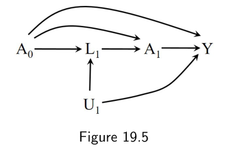
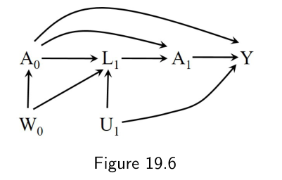
正如本书第一部分所讨论的，一个 SWIG 代表某个特定干预下的反事实世界。图 19.7 中的 SWIG 代表了图 19.5 的世界，如果所有人都接受了静态策略 (a0, a1)，其中 a0 和 a1 可取 0 或 1。例如，图 19.7 可以用来代表"始终治疗"策略下的世界（a0 = 1, a1 = 1），也可以代表"从不治疗"策略下的世界（a0 = 0, a1 = 0）。构造这个 SWIG 的方法是，先把处理节点 A0 和 A1 一分为二。分裂开的处理节点的右边代表干预下的处理值。左边代表在此前所有处理上施加干预的情况下本会观测到的处理值。因此，A0 的左边正是 A0，因为没有此前的处理可以施加干预；而 A1 的左边是反事实处理 A0a1，即在把 A0 设为 a0 之后会观测到的处理值。原因果图中指向某个处理的所有箭头，现在都指向左边；从某个处理出发的所有箭头，现在都从右边发出。结局变量变成了反事实结局 Ya0,a1，协变量 L 也被替换为相应的反事实变量。注意我们把策略 (a0, a1) 下与 L1 对应的反事实变量写作 L1a0 而非 L1a0,a1，因为对 A1 的干预不可能影响更早的 L1 的取值。
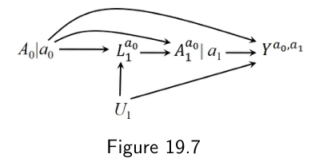
与图 19.5 的有向无环图不同，图 19.7 的 SWIG 确实包含了反事实结局，这意味着我们可以用 d-分离在图上直接检验可交换性。
在图 19.7 中，通过 d-分离可知，对任何静态策略 (a0, a1)，Ya0,a1 ⊥⊥ A0 和 Ya0,a1 ⊥⊥ A0a1 | A0, L1a0 都成立。这第二个条件独立式看似存在一条开放路径 A0a1 ← a0 → L1a0 ← U1 → Ya0,a1，但这条路径实际上被阻断了，原因如下：在反事实世界中，a0 是一个常数，而在概率陈述中常数总是被隐含地条件化，尽管按惯例它们不出现在条件事件里。细节见精细辨析 19.2。
第二个条件独立式 Ya0,a1 ⊥⊥ A0a1 | A0, L1a0 按定义意味着，在接受了处理 A0 = a0 的个体子集中，Ya0,a1 ⊥⊥ A0a1 | A0 = a0, L1a0。因此，由一致性可得 Ya0,a1 ⊥⊥ A1 | A0 = a0, L1，因为由一致性 L1a0 = L1 且 A1a0 = A1。
我们把上述条件称为静态顺序可交换性（static sequential exchangeability）：Yā ⊥⊥ Ak | Āk−1 = āk−1, L̄k，k = 0, 1…K。它比对 Yg 的顺序可交换性要弱，因为它只要求以静态策略 g = ā 为下标的反事实结局 Yā 与处理 Ak 之间的条件独立。静态顺序可交换性足以识别任何静态策略 g = ā 下的反事实均值。另见技术要点 19.3。
在图 19.6 的因果图下，静态顺序可交换性同样成立，这一点可以通过对它对应的图 19.8 中的 SWIG 施加 d-分离来检验。于是，在图 19.6 所表示的观察性研究中，我们可以识别任何静态策略 (a0, a1) 下的反事实均值。回到图 19.5。现在假定从 L1 指向 A1 的箭头不见了。那样的话，图 19.7 的 SWIG 中从 L1a0 指向 A0a1 的箭头也会随之不见。于是由 d-分离可知，顺序无条件可交换性成立，因而任何静态策略下的反事实均值都可以在没有 L1 数据的情况下被识别。现在再假定图 19.5 中存在从 U1 指向 A1 的箭头。那么图 19.7 的 SWIG 中就会出现从 U1 指向 A0a1 的箭头，于是任何形式的顺序可交换性都不成立，反事实均值在任何策略下都不可识别。
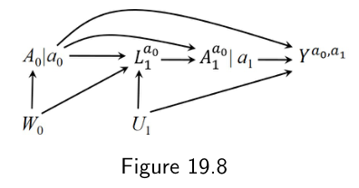
现在我们来讨论动态处理策略下的 SWIG。图 19.9 表示图 19.5 的世界在动态策略 g = [g0, g1(L1)] 下的情形，其中处理 A0 被赋一个固定值 g0（0 或 1），而 k = 1 时刻的处理 A1 被赋予依赖于 L1g 取值的 g1(L1g)，其中 L1g 是在 k = 0 时刻赋予处理值 g0 之后观测到的 L1 的取值。例如，g 可以是策略"k = 0 时不治疗，k = 1 时只在 CD4 细胞计数偏低（即 L1g = 1）时才治疗"。在该策略下，g0 = 0 对每个人成立；当 L1g = 1 时 g1(L1g) = 1，当 L1g = 0 时 g1(L1g) = 0。因此 SWIG 中包含一条从 L1g 指向 g1(L1g) 的箭头。这条箭头并不在原来的因果图中，它只存在于与该动态策略相联系的反事实世界里。因此我们把它画成与其他箭头都不同的形式，尽管在评估 d-分离时仍须把它当作其他任何箭头来对待。SWIG 中的结局是动态策略 g 下的反事实结局 Yg，该策略使用 L1 来分配处理 A1。
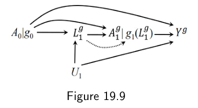
对图 19.9 的 SWIG 施加 d-分离，我们发现对任何策略 g，Yg ⊥⊥ A0 和 Yg ⊥⊥ A1g | A0 = g0, L1g 都成立。也就是说，对 Yg 的顺序可交换性成立，这意味着我们可以识别所有策略 g 下的反事实均值（另见精细辨析 19.2）。然而，这个结果对图 19.6 的因果图并不成立。
从图 19.9 的 SWIG 中读到的是 Yg ⊥⊥ A1g | A0, L1g，由一致性即得 Yg ⊥⊥ A1 | A0 = g0, L1。而图 19.10 的 SWIG 代表图 19.6 的世界在动态策略 g = [g0, g1(L1)] 下的情形，对它施加 d-分离，我们发现 Yg ⊥⊥ A0 不成立，因为存在一条开放路径 A0 ← W0 → L1g → g1(L1g) → Yg。也就是说，对 Yg 的顺序可交换性不成立，这意味着任何策略 g 下的反事实均值都无法识别。
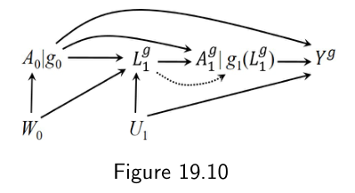
总而言之，在由图 19.5 表示的观察性研究（或序贯随机试验）中，对 Yg 的顺序可交换性成立，因此数据可以被用来有效地估计涉及静态策略和动态策略的因果效应。另一方面，在由图 19.6 表示的观察性研究中，只有对静态策略而言较弱的那个条件成立，因此数据可以被用来有效地估计涉及静态策略的因果效应，却不能估计涉及动态策略的因果效应。换个角度理解：在图 19.10 的 SWIG 所代表的那个反事实世界里，Yg 的分布依赖于 g1(L1g) 的分布，因而依赖于 L1g 的分布。然而，由于路径 A0 ← W0 → L1 的存在，L1g 的分布是不可识别的。
最后一个例子。图 19.11 与图 19.6 相同，只是多了一条从 L1 指向 Y 的箭头，图 19.12 是它在静态策略下对应的 SWIG。我们可以用 d-分离证明，对 Yg 的顺序可交换性和对 Yā 的静态顺序可交换性都不成立。因此，在由图 19.11 表示的观察性研究中，我们不能用数据来有效地估计涉及任何策略的因果效应。
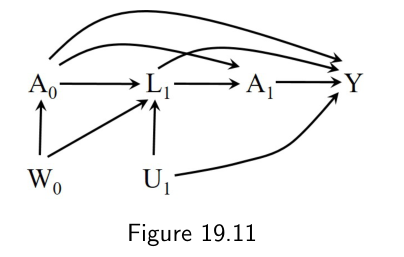
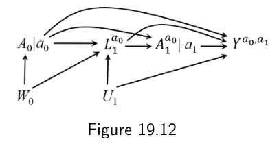
19.6 时变混杂与时变混杂因子
在观察性研究中，没有任何形式的顺序可交换性有保证成立。要达到近似的可交换性，需要专家知识来指导研究者设计研究，尽可能多地测量相关的变量 L̄k。例如，在 HIV 研究中，专家们会一致认为 CD4 细胞计数、病毒载量、症状等时变变量需要被恰当地测量并加以调整。
但"已测协变量是否足以保证顺序可交换性？"这个问题永远无法确定地回答。不过我们可以借助专家知识来组织我们对可交换性的信念，并把它们表示在一张因果图里。图 19.1 到图 19.4 就是些例子，它们概括了不同的情形。请注意，我们是在不存在选择（例如失访造成的删失）的前提下画出这些因果图的，以便把注意力集中在混杂上。
考虑图 19.5。和本书第一部分一样，假设我们关心的是时固定处理 A1 对结局 Y 的效应。我们说 A1 对 Y 存在混杂，是因为 A1 和 Y 共享原因 U，也就是因为两者之间存在一条经过 U 的开放后门路径。要无偏地估计这个效应，我们就需要调整 A1 对结局 Y 的效应的混杂因素，正如第 7 章所解释的。换句话说，我们需要能够阻断 A1 与 Y 之间所有开放的后门路径。这条后门路径 A1 ← L1 ← U → Y 无法通过对共同原因 U 做条件化来阻断，因为 U 未被测量，研究者拿不到它。但这条后门路径可以通过对已测量的 L1 做条件化来阻断。于是，如果研究者为所有个体都采集了 L1 的数据，那么 A1 的效应就不存在未测量混杂。我们便说 L1 是 A1 效应的混杂因素，尽管 A1 和 Y 真正的共同原因是未测量的 U（若需要重温混杂与因果图，请重读第 7.3 节）。
在对碰撞因子 L1 做条件化之后，第二条后门路径被打开：A1 ← A0 → L1 ← U → Y。这条后门路径可以通过对既往处理 A0 做条件化来安全地阻断——只要研究者拿得到 A0。
现在想象一张很长的因果图，它包含所有时间点 k = 0, 1, 2…，其中 Lk 影响着随后的处理 Ak, Ak+1…，并与结局 Y 共享未测量原因 Uk。假设我们想估计由对 A0, A1, A2 的干预所定义的处理策略对结局 Y 的因果效应。那么在每个时刻 k，我们需要协变量史 L̄k 与处理史 Āk−1 一起来阻断处理 Ak 与结局 Y 之间的后门路径。因此，要使 Ā 的效应不存在未测量混杂，就要求研究者为所有个体采集 L̄k 的数据。于是我们说，L̄k 中的时变协变量是时变处理 Ā 对 Y 的效应的时变混杂因子，它们在研究的若干个（或在我们的例子中，所有的）时刻 k 上都是混杂因子。关于时变混杂更精确的定义，见精细辨析 19.3。
时变混杂因子有时也被称为时变依赖的混杂因子（time-dependent confounders）。
遗憾的是，我们无法从经验上确认所有混杂因素——无论是时固定的还是时变的——都被测量了。也就是说，我们无法从经验上区分图 19.2（无未测量混杂）和图 19.3（有未测量混杂）。有意思的是，即便所有混杂因素都被正确测量并正确建模了，在比较处理策略时，多数调整方法仍然可能给出有偏的估计。下一章将解释为什么 g 方法是调整时变混杂因子的恰当手段。